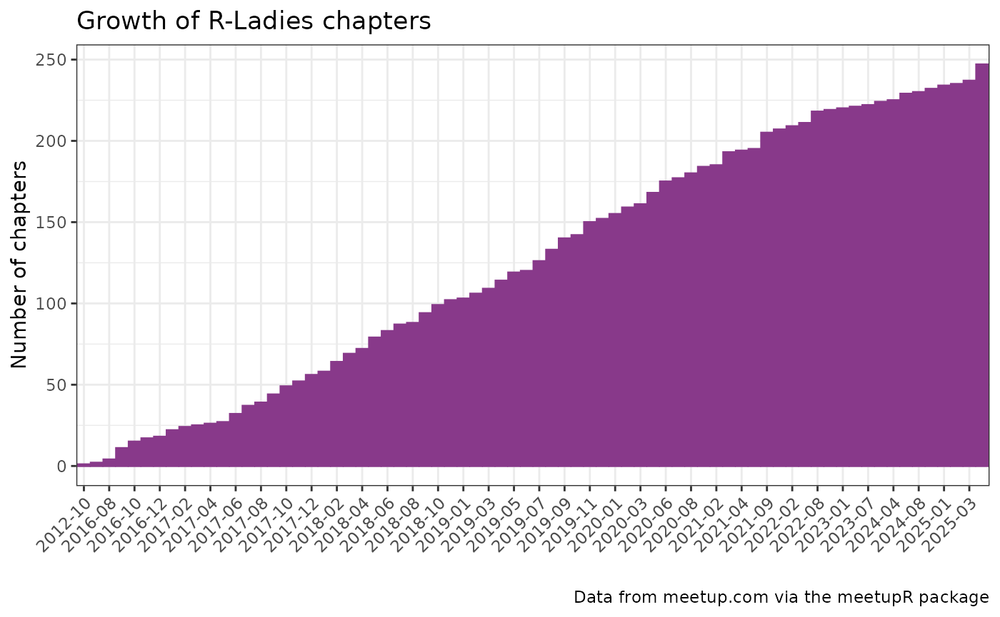
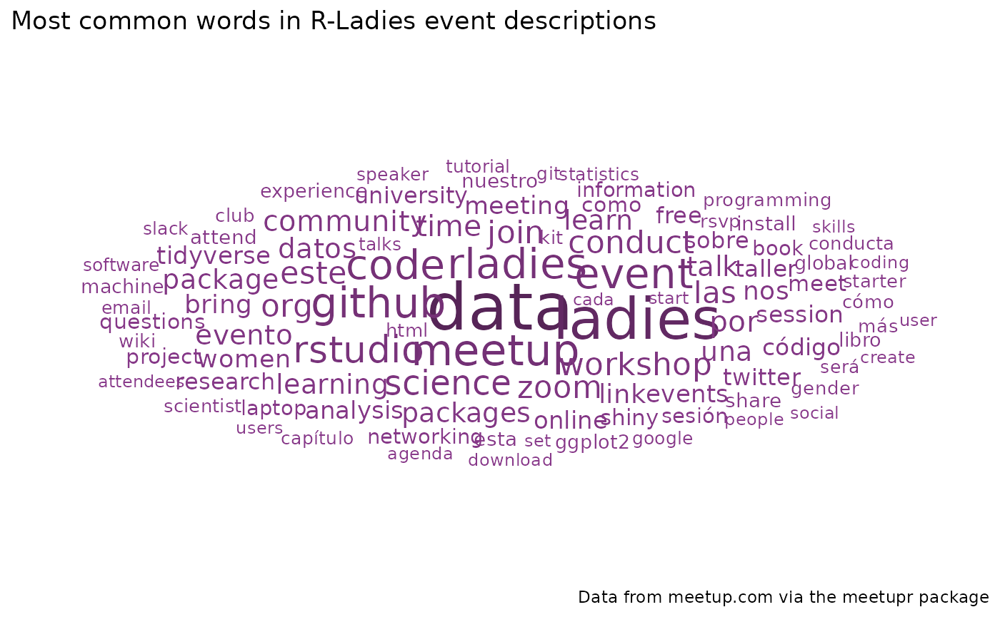

How many R-Ladies chapter are out there?
We can use the find_groups() function to search for
groups with “r-ladies” in their name. Note that the function returns up
to 200 results, so we will filter them afterwards.
meetupr_groups <- find_groups("r-ladies")
meetupr_groups
#> # A tibble: 200 × 14
#> id name urlname city state country lat lon memberships_count
#> <chr> <chr> <chr> <chr> <chr> <chr> <dbl> <dbl> <int>
#> 1 38267718 R User Gr… r-nvsu Mani… "" ph 14.6 121. 3
#> 2 24820200 R-Ladies … rladie… Méxi… "" mx 19.4 -99.1 2944
#> 3 20378903 R-Ladies … rladie… Melb… "" au -37.8 145. 2719
#> 4 32767673 R-Ladies … rladie… Pach… "" mx 20.1 -98.8 41
#> 5 33041212 R-Ladies … rladie… al-K… "" sd 15.6 32.5 113
#> 6 35897820 R-Ladies … rladie… Gabo… "" bw -24.6 25.9 1132
#> 7 28706674 R-Ladies … rladie… Nite… "" br -22.9 -43.1 1281
#> 8 33361775 R-Ladies … rladie… Ha N… "" vn 21.0 106. 124
#> 9 27456719 R-Ladies … rladie… São … "" br -23.5 -46.6 1818
#> 10 28441250 R-Ladies … rladie… San … "" ar -41.1 -71.3 588
#> # ℹ 190 more rows
#> # ℹ 5 more variables: founded_date <dttm>, timezone <chr>, join_mode <chr>,
#> # is_private <lgl>, membership_status <chr>Since the search might return groups that are not actually R-Ladies chapters, we will filter them by name.
rladies <- meetupr_groups |>
filter(grepl("R-Ladies", name, ignore.case = TRUE))
rladies
#> # A tibble: 55 × 14
#> id name urlname city state country lat lon memberships_count
#> <chr> <chr> <chr> <chr> <chr> <chr> <dbl> <dbl> <int>
#> 1 24820200 R-Ladies … rladie… Méxi… "" mx 19.4 -99.1 2944
#> 2 20378903 R-Ladies … rladie… Melb… "" au -37.8 145. 2719
#> 3 32767673 R-Ladies … rladie… Pach… "" mx 20.1 -98.8 41
#> 4 33041212 R-Ladies … rladie… al-K… "" sd 15.6 32.5 113
#> 5 35897820 R-Ladies … rladie… Gabo… "" bw -24.6 25.9 1132
#> 6 28706674 R-Ladies … rladie… Nite… "" br -22.9 -43.1 1281
#> 7 33361775 R-Ladies … rladie… Ha N… "" vn 21.0 106. 124
#> 8 27456719 R-Ladies … rladie… São … "" br -23.5 -46.6 1818
#> 9 28441250 R-Ladies … rladie… San … "" ar -41.1 -71.3 588
#> 10 34931513 R-Ladies … rladie… São … "" br -18.7 -39.9 24
#> # ℹ 45 more rows
#> # ℹ 5 more variables: founded_date <dttm>, timezone <chr>, join_mode <chr>,
#> # is_private <lgl>, membership_status <chr>Now, while searching for R-Ladies chapters is a nice way to get
started, a more reliable way is to use the get_pro_groups()
function, which retrieves all the official R-Ladies chapters. Since
R-Ladies is a pro organization on meetup.com, we can use this function
to get the list of all chapters that are part of the R-Ladies
network.
rladies_pro <- get_pro_groups("rladies")Growth
Let us now visualize the growth of R-Ladies chapters over time.
df <- rladies_pro |>
mutate(
dategroup = format(founded_date, "%Y-%m")
) |>
group_by(dategroup) |>
tally() |>
mutate(
cum_sum = cumsum(n)
)
ggplot(
data = df,
aes(x = dategroup, y = cum_sum)
) +
geom_bar(
stat = "identity",
color = "#88398A",
fill = "#88398A"
) +
theme_bw() +
labs(
title = "Growth of R-Ladies chapters",
caption = "Data from meetup.com via the meetupR package",
x = "",
y = "Number of chapters"
) +
theme(
axis.text.x = element_text(angle = 45, vjust = 1, hjust = 1)
) +
scale_x_discrete(
breaks = df$dategroup[seq(1, length(df$dategroup), by = 2)]
)
Chapter activity
Let us now extract the number of past events and the dates of last and next events, for each chapter.
rladies_events <- get_pro_events("rladies")
event_summary <- rladies_events |>
group_by(group_name, group_urlname) |>
summarise(
n_past = ifelse("PAST" %in% status, length(status), 0),
last_event = ifelse(
"PAST" %in% status,
format(max(date_time[status == "PAST"]), "%Y-%m-%d"),
NA
),
next_event = ifelse(
"ACTIVE" %in% status,
format(min(date_time[status == "ACTIVE"]), "%Y-%m-%d"),
NA
)
)
event_summary
#> # A tibble: 231 × 5
#> # Groups: group_name [228]
#> group_name group_urlname n_past last_event next_event
#> <chr> <chr> <int> <chr> <chr>
#> 1 R Ladies Aarhus rladies-aarhus 1 2021-06-16 NA
#> 2 R Ladies Fort Collins rladies-fort-collins 4 2025-06-27 2025-12-15
#> 3 R Ladies Guanajuato rladies-guanajuato 3 2025-03-08 NA
#> 4 R Ladies Singapore rladies-singapore-sg 4 2025-01-12 NA
#> 5 R Ladies Temuco rladies-temuco 4 2025-10-06 NA
#> 6 R Ladies Tepic rladies-tepic 3 2025-03-13 NA
#> 7 R Ladies Tirane rladies-tirane 7 2025-10-29 2025-12-16
#> 8 R Ladies Zagreb rladies-zagreb 2 2024-12-17 NA
#> 9 R-Ladies Abuja rladies-abuja 32 2025-10-25 NA
#> 10 R-Ladies Accra rladies-accra 2 NA NA
#> # ℹ 221 more rowsWhich chapters have never had events and have not even planned one (and have been created more than 6 months ago)?
rladies <- rladies_pro |>
rename(group_urlname = urlname) |>
left_join(event_summary, by = "group_urlname")
rladies |>
filter(
n_past == 0,
is.na(next_event),
founded_date < Sys.Date() - 6 * 30
) |>
arrange(founded_date)
#> # A tibble: 0 × 21
#> # ℹ 21 variables: id <chr>, name <chr>, group_urlname <chr>, description <chr>,
#> # lat <dbl>, lon <dbl>, city <chr>, state <chr>, country <chr>,
#> # membership_status <chr>, memberships_count <int>, founded_date <dttm>,
#> # pro_join_date <dttm>, timezone <chr>, join_mode <chr>, who <chr>,
#> # is_private <lgl>, group_name <chr>, n_past <int>, last_event <chr>,
#> # next_event <chr>Which chapters had no events in the past 6 months and have not even planned one?
rladies |>
filter(
last_event < as.POSIXct("2019-03-29"),
is.na(next_event)
) |>
arrange(last_event)
#> # A tibble: 0 × 21
#> # ℹ 21 variables: id <chr>, name <chr>, group_urlname <chr>, description <chr>,
#> # lat <dbl>, lon <dbl>, city <chr>, state <chr>, country <chr>,
#> # membership_status <chr>, memberships_count <int>, founded_date <dttm>,
#> # pro_join_date <dttm>, timezone <chr>, join_mode <chr>, who <chr>,
#> # is_private <lgl>, group_name <chr>, n_past <int>, last_event <chr>,
#> # next_event <chr>Wordcloud of events
Finally, let us create a wordcloud of the most common words in the event descriptions of all R-Ladies chapters.
# Strip html tags from event descriptions
strip_html <- function(x) {
sapply(x, function(x) {
gsub("<[^>]+>", "", x)
})
}
#' custom function to create wordcloud data
rladies_wc <- function(data, column, n = 100) {
data |>
unnest_tokens(word, {{ column }}) |>
anti_join(stop_words, by = "word") |>
filter(
!grepl("^[0-9]+$", word),
nchar(word) > 2,
!word %in% c("p", "br", "href", "http", "https", "class", "www", "com"),
!word %in%
c(
"de",
"la",
"et",
"les",
"des",
"le",
"en",
"un",
"une",
"du",
"para",
"con",
"del",
"el",
"se",
"y",
"los",
"es"
)
) |>
count(word, sort = TRUE) |>
slice_max(n, n = n) |>
ggplot(aes(
label = word,
size = n,
color = n
)) +
geom_text_wordcloud() +
scale_size_area(max_size = 12) +
scale_color_gradient(
low = "#88398A",
high = "#562457"
) +
theme_minimal()
}
rladies_wc(rladies_events, description) +
labs(
title = "Most common words in R-Ladies event descriptions",
caption = "Data from meetup.com via the meetupr package"
)